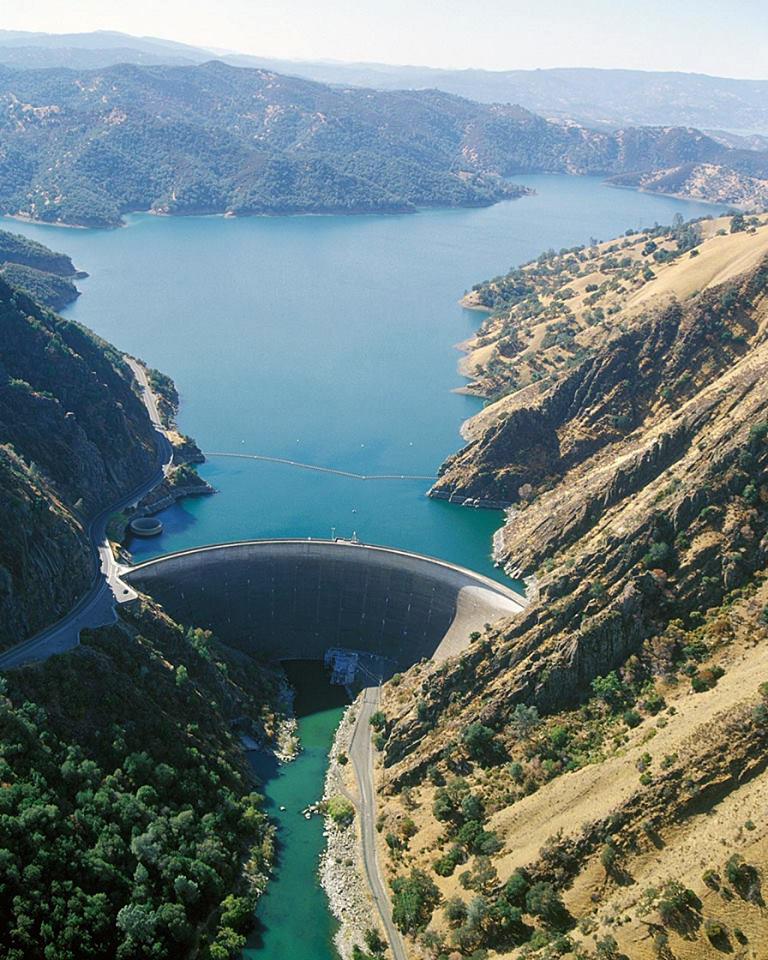

Watersheds provide a structure to the way we understand how water exists in and moves through the environment. It's an area of land in which streams and precipitation drain into a common outlet. It includes all surface and underlying groundwater. Watershed boundaries follow the highest ridgeline around the stream drainage area and converge at the lowest point where water flows out of the watershed.
Watersheds exist on several scales. For reporting and research purposes, they are organized into nested hydrologic units (HUC).
By the late eighties, the emergence of GIS permitted federal agencies to further divide the sub-basins into watersheds that could be used to examine trends and patterns on more local levels.
The map to the right shows the highest levels of watershreds in the United States. If you look closely, you can see a major river crossing through the middle of each of these regions.
The American West is a diverse region with mountains, plains, deserts, and canyons, but it is united by two things: lack of preciptiation and a bounty of open space. The lack of precipitation presented unique water management challenges. Initially, settlers diverted water from streams to support agriculture, but as demand outweighed supply settlers pressured the federal government to undertake water storage and irrigation projects. Explorer and scholar of the West, John Wesley Powell, recognized the unique water needs and proposed a river-basin/watershed-based approach to water management in the West, but it was not enough to prevent the grid pattern that organized the East from reaching West.
The first western water reclamation projects were privately funded and often failed due to inadequate funding and expertise. The federal government finally intervened with the passage of the Reclamation Act in 1902. Western water management found its first home at the US Geological Survey, and was moved to an independent bureau within the Department of the Interior by 1907. By 1923, the agency was known as the Bureau of Reclamation (USBR) and by 1928, federal funds began flowing through the agency for major projects like the Hoover Dam. The abundance of open space in the west helped to facilitate the system of large water developments that we see today.
Imagine how different states would look if they were structured around water management issues. This map shows sub-regions (HUC4) for the four westernmost watersheds in the continental US.
In 1878, John Wesley Powell proposed managing water-needs by creating watersheds-as-political-jurisditions. Watersheds form the best hydrological planning units for land, water, and ecosystem management....and yet, in the United States, one watershed can be regulated/managed by multiple state, county, and city agencies with conflicting interests and needs. One connected stream can be subject to multiple water quality regulations, stormwater ordinances, fishing licenses regulations based on government offices.
Because political boundaries do not mirror those of watersheds, the management of water resources requires a substantial amount of interagency coordination. This map shows watersheds at a river-basin level. You can see that a number of them cross state lines and city metro areas cover multiple river-basins. Things are not much cleaner or clearer on data collecting level. The subcommittee on Spatial Water Data alone includes members from the Natural Resources Conservation Service, USGS, Forest Service, BLM, Corps of Engineers, EPA, FEMA, NOAA, and NWS.
All land drains into a lake, river, stream or other water body and directly affects its quality, so anything that water encounters upstream impacts everything downstream. The EPA is one of many governmental agencies that collects and measures attributes of watersheds. Specifically, the EPA tracks watershed health based on six ecological attributes:
This map shows the number of at-risk terrestrial, wetland, and aquatic species by sub-basins. At-risk species are defined as species that are listed under the US Endangered Species Act and species that have a NatureServe conservation rank of critically imperiled.
The Bureau of Reclamation is best known for dams, powerplants, and canals that facilitated the economic developement of the West. Today, the USBR is the largest wholesaler of water in the US. 10 million acres of farmland are irrigated by reclamation water. One out of ever five farmers in the American West are served by reclamation water. 25% of the nation's fruit and nut crop and 60% of the nation's vegetables are produced using reclamation water. The USBR is responsible for 338 reservoirs, 492 dams, and 8,116 miles of irrigation canals.
Shown here are USBR sites where data is collected for the Reclamation Water Information System. While there is not a clear pattern between the point locations and areas that have a large number of at-risk species, there does seem to be something happening near the Lake Berryessa/Monitcello Dam project near San Franciscso.
In 1948, the federal government had to choose between saving Berryessa Valley for farming or flooding it
to benefit neighboring Solano. Napa County touted the valley’s 12,000 acres as some of the most fertile in
California. But in the eyes of the dam builders, the U.S. Bureau of Reclamation, Devil’s Gate was one of
the best dam sites in the entire Central Valley.
--Peter Jensen
Source:Napa Register, August 10, 2012
In the winter of 1957, the 300-foot-high Monticello Dam was complete at Devil’s Gate. Napa County lost one-eighth of its farmland. The decision to flood Berryessa Valley reflected California’s insatiable need for water, its most precious resource. Water from the reservoir supplies agriculture downstream. In 1983, the Monticello Dam Powerplant was added to the project. Power is sent to the North Bay Area.  By Bureau of Reclamation - Montecello Dam, CC BY-SA 2.0, Link
The EPA reports on 460 watershed indicators at the sub-watershed (HUC12) level in the Watershed Index Online tool. These indicators are divided into four categories: base, ecological indicators, stressor indicators, and social indicators. The following scenes explore data points in each of these categories for the purpose of examining the health of the sub-watersheds surrounding Lake Berryessa and the Monticello Dam to see if an inference can be drawn between the presence of a major water reclamation project and the high number of at-risk species.
A watershed's ecological index score changes based on the factors selected, where higher scores represent a healthier watershed. The ecologic index score for this map was developed by using the following measures:
A watershed's stressor index score changes based on the factors selected, where higher scores represent a a less healthy watershed. The stressor index score for this map was developed by using the following measures:
Social indicators for watersheds are typically things like the percent protected lands or societal traits that have a positive impact on a watershed. This social index measures the percentage of each watershed that is classified as GAP Status 1, 2, or 3. Status 1 lands have permanent protection from conversion of natural land cover and a mandated management plan to maintain a natural state. Status 2 lands must maintain a primarily natural state. Status 3 lands are defined as having permanent protection, but are subject to extractive uses like logging or mining.
There is a tremendous amount of data being collected to measure the health of watersheds. The readily available WSIO data on which much of this map is based is centered around measurements for local sub-watersheds and does not account for upstream measurements that most certainly impact downstream watersheds. While this map was unable to directly connect water reclamation projects to biodiversity issues, it was helpful in illustrating the fragility of western watersheds
Major Data Resources: